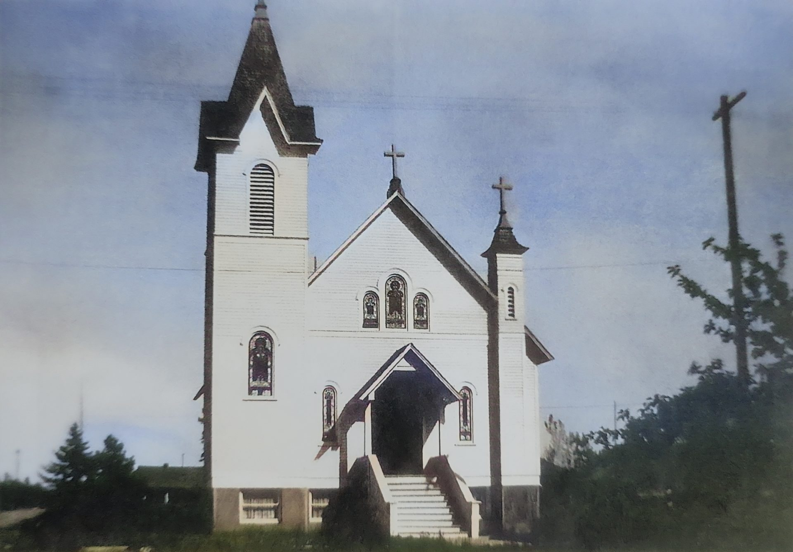

Our Story
Every historic building has a story. Ours began in 1907.
Originally constructed as St. Joseph’s Catholic Church, this beautiful landmark served the Spirit Lake community for decades before the congregation moved to a new church in the 1960s.

While the building changed hands over the years, its remarkable architecture and craftsmanship remained waiting for a new purpose.
That new chapter began in 2018 when owner Steve Stoke purchased the property with a vision: preserve the building’s rich history while creating a boutique lodging experience unlike any other.
Rather than erase the past, the restoration celebrated it. Original wood moldings were carefully preserved, soaring ceilings remained untouched, and many of the architectural details that define the church continue to tell its story today.
The result is a place where guests can enjoy modern comfort while surrounded by more than a century of history. From welcoming common spaces to thoughtfully appointed guest rooms and suites, every stay reflects our commitment to honoring the building’s legacy while providing exceptional hospitality.
Timeline
- 1907Built as St. Joseph’s Catholic Church.
- 1960sThe congregation moves to a new church.
- 2018Steve Stoke purchases the property and begins the restoration.
Whether you’re visiting Spirit Lake for a quiet weekend, exploring North Idaho, or simply looking for a unique place to stay, we invite you to experience a piece of local history renewed for a new generation.
Continue
Historic. Architectural. Renewed.
Ready to Plan Your Trip?
Whether you’re celebrating a special occasion, planning a romantic getaway, or exploring the beauty of North Idaho, we invite you to stay somewhere truly unforgettable.
Book your stay today